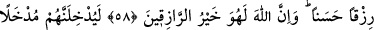

ALLAH
HAKSIZLIĞA UĞRAYANA
YARDIM EDECEKTİR
58. Allah yolunda hicret edip sonra öldürülen yahut ölenleri hiç şüphesiz Allah
güzel bir rızıkla rızıklandıracaktır. Şüphesiz Allah, evet O, rızık verenlerin en
hayırlısıdır.
59. Allah onları, herhalde memnun kalacakları bir girilecek yere sokacaktır.
Allah, kesinlikle tam bir bilgi sahibidir, halîmdir.
60. İşte böyle. Her kim, kendisine verilen eziyetin dengi ile karşılık verir de,
bundan sonra kendisine yine bir tecavüz ve zulüm vaki olursa, emin olmalıdır ki,
Allah ona mutlaka yardım edecektir. Hakikaten Allah çok bağışlayıcı ve mağfiret
edicidir.
61. Böylece (Allah, haksızlığa uğrayana yardım edecektir ve buna kadirdir).
Çünkü Allah, geceyi gündüze katar, gündüzü geceye katar. Şu da muhakkak ki
Allah, hakkıyla işiten ve görendir.
62. Böyledir. Çünkü Allah, hakkın ta kendisidir. O’nun dışındaki taptıkları ise
bâtılın ta kendisidir. Gerçek şu ki Allah, evet O, uludur, büyüktür.
“Allah yolunda” Allah’ın cennetine ve rızasına ulaştıran cihad uğrunda “hicret edip”
vatanlarından ayrılıp “sonra öldürülen” din düşmanlarıyla olan cihadda öldürülen,
şehîd olan “ ruhu cesedden izâle edip ayırmaktır. Fakat bu işi üstlenen kimsenin
fiili dikkate alındığında “” denir. Hayatın elden gitmesi dikkate alındığında ise “
denir. “yâhut” hicret sırasında şehâdet şerbetini tatmadan “ölenleri hiç şüphesiz Allah
güzel bir rızıkla rızıklandıracaktır.” Kasdedilen ebediyyen sona ermeyen cennet